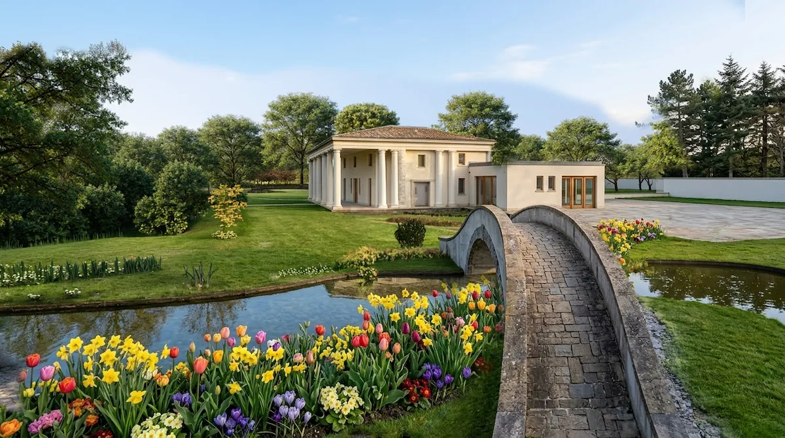
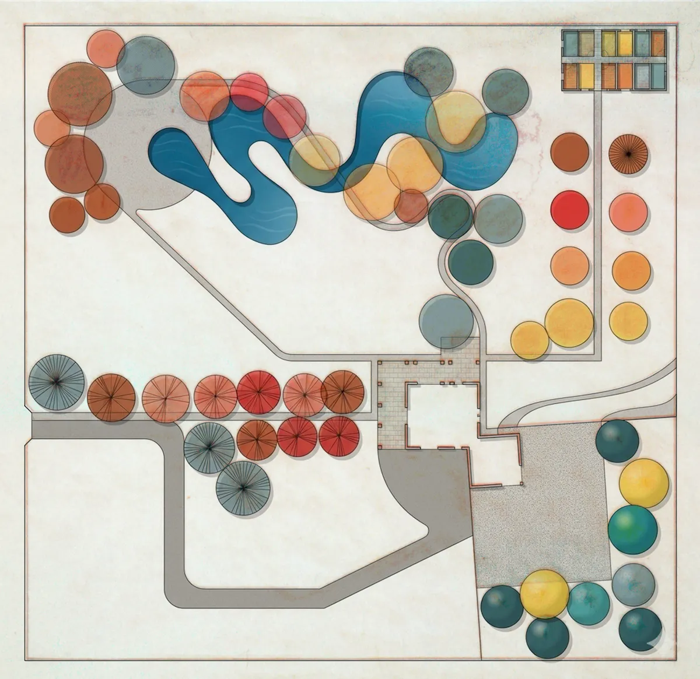
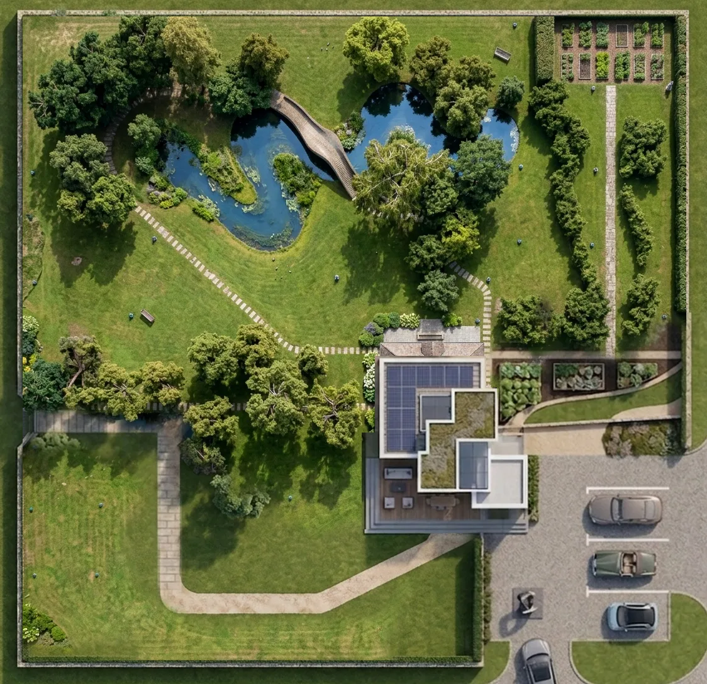
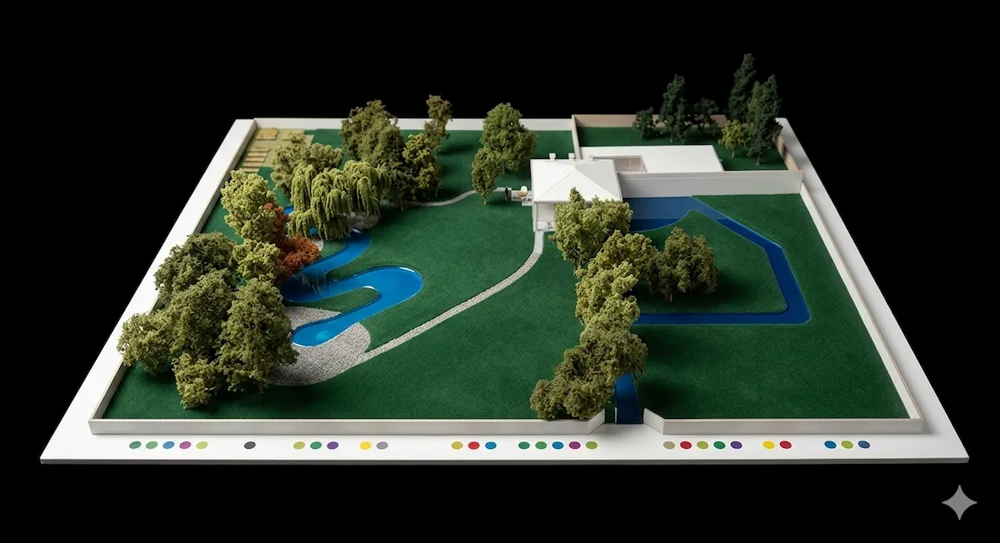
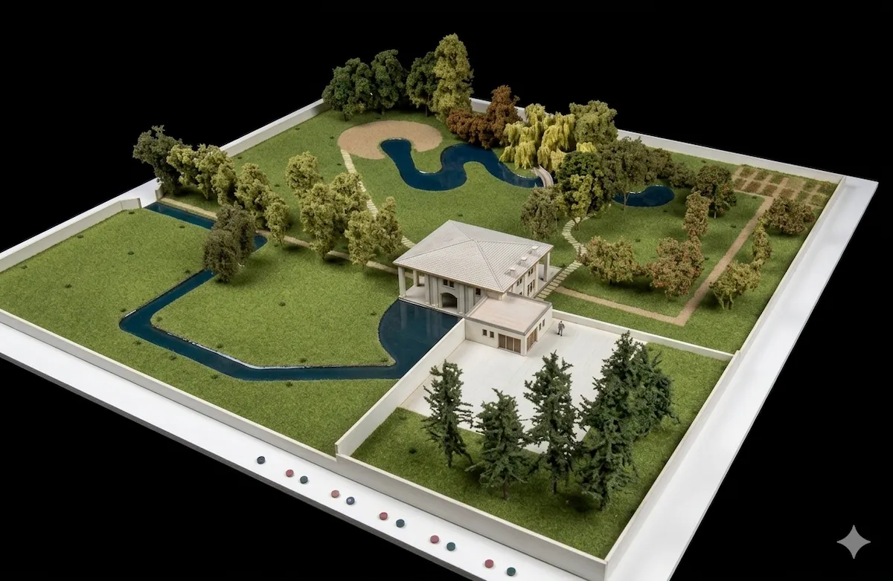

Un parco stile inglese e una villa del basso ferrarese immersa nel verde. Il progetto ha permesso di mostrare un sistema automatico di irrigazione rappresentato sul modello con luci led
Il tema era presentare il nuovo sistema di irrigazione automatica per i parchi lo abbiamo fatto costruendo il modellino e usando le luci led per rappresentare il sistema di irrigazione



